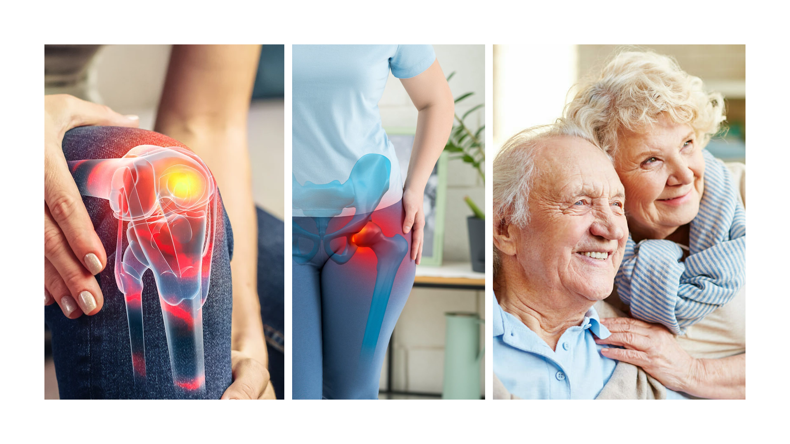

Have you ever noticed how much your joint health influences everyday life? When your knees and hips are supported, you can feel steadier in your movements, more comfortable during daily tasks, and more confident staying active.
Not because you aren't trying. Most of us were simply never taught how to support joint health the same way we support other parts of well-being, like sleep, movement, and nutrition.
Many people deal with stiffness, clicking, or sensitivity in knees and hips that can make daily routines feel harder and less predictable.
It's easy to feel limited when joint comfort comes and goes. The goal is to build a simple routine that supports steadier day-to-day mobility.
Your body has built-in systems that support cartilage health, fluid circulation, and recovery, but it helps to use the right habits to work with them.

That means you can start supporting your knees and hips at any stage of life. And best of all, it doesn't have to be complicated. Small, consistent steps add up.
Build a daily routine that supports joint comfort and flexibility so activities like walking or climbing stairs feel easier.
With a joint-friendly routine, you can feel more prepared for walks, gardening, and time on your feet, without overthinking every step.
When you support joint lubrication and muscle strength, it is easier to stay consistent with the activities that keep you feeling your best.
A complete guide—carefully crafted to fit perfectly into your daily routine. This book isn't about miracles or unrealistic promises. It's a roadmap for joint support.
Practical techniques to support joint comfort and everyday function, including low-impact movement and circulation habits.
Nutrition approaches that fit real life and can support joint function, cartilage health, and steady energy throughout the day.
Methods to structure your day and stick with helpful habits for your knees and hips without overwhelming your schedule.
Learn to manage long periods of standing, footwear choices, weather sensitivity, and travel without derailing your comfort routine.
Simple practices designed to work in real life and complement the guidance you already follow with your healthcare team.
Just practical steps anyone can follow, designed to work alongside your professional medical guidance.
If you feel your joint comfort and day-to-day mobility could be better supported than it is right now, this is a good time to build a calmer, more consistent routine. This book was created for people who want practical joint-friendly habits.
Because supporting your joint health doesn't have to be complicated. It can be simple, steady, and realistic. And it can start today.